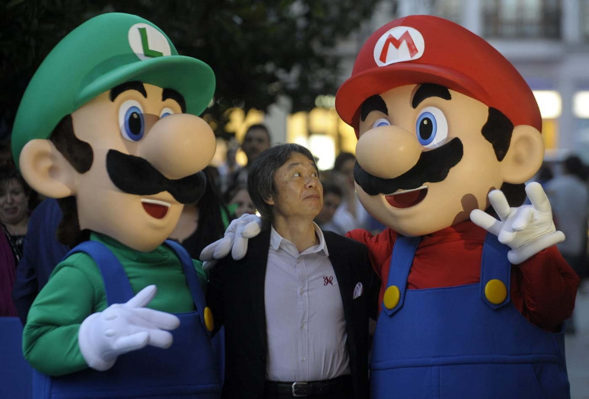

SuperHood
After playing through the Super Mario All-Stars version of the first Super Mario Bros, I just had to go back and play the original,unedited original for old time's sake. As usual, my antiquated Nintendo Entertainment System took a bit of shaking and swearing before it would finally load a game, and a lot of the graphics were messed up... But there was Super Mario, in all his 8-bit glory! Celebrating over a quarter century of this classic series, and taking a tour through this memorable game.
Creator of Mario : Shigeru Miyamoto
Click on the picture to know where he lives